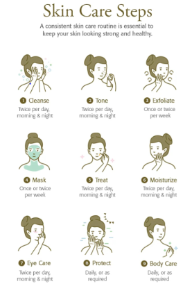
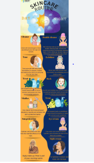

The skincare routine order: step-by-step
1. Cleansing
- The surface of the skin is continuously exposed to external factors that can alter its appearance and cause imperfections, dull tone, irregular texture or premature aging. Therefore, one must keep the skin clean.
2. Exfoliation
- ultimate micropeel is the micro-exfoliating solution that gently renews the surface of the skin to remove dead cells, refine its texture and enhance its luminosity.
3. Mask
- Masks provide your skin with high doses of the specific active ingredients it needs. Whether you're looking to moisturise, sooth or purify your skin, there's a mask for you.
4. Toner
- hidratonic mist is a toner mist with a balancing and anti-pollution action suitable for all skin types. It contains rose water, which prevents signs of skin aging, providing softness and hydration.
5. Serum or concentrate
-Choose the serum or concentrate that best suits your needs..
6. Eye contour
-The skin in the eye contour is thinner and needs special care to prevent under-eye circles and bags. There are eye contour products that specifically brighten the look, improve firmness or smoothen wrinkles. Discover which one's best for you.
7. Moisturising cream
-You should never forget this step, especially if your skin is dry. Are you looking to improve luminosity, firmness or smoothen wrinkles? Discover the age element� range and find the moisturising and antiaging cream that best suits your needs. To keep your skin healthy and ensure a correct barrier function against external factors that may harm your skin, we recommend the moisturising solutions range.
8. Sun protection!
-It's the best antiaging protection and the best way to keep a healthy skin over the years! Protect your skin every day, and don't forget to reapply sunscreen every two or three hours, especially in summer.